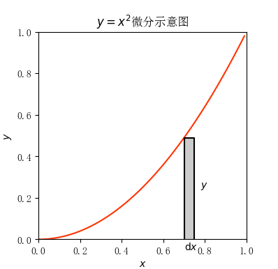
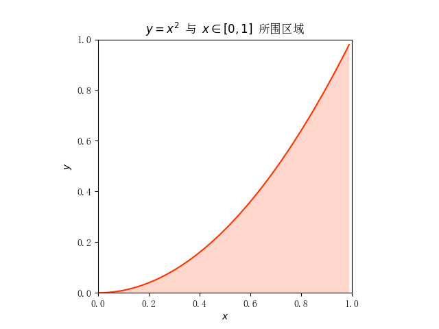
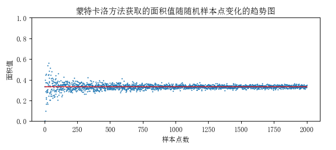

题目2
计算思维上机实验报告
1. 实验名称¶
实现抛物线 \(y=x^2\) 与 \(x\in[0,1]\) 所围区域面积的求解
2. 实验目的¶
使用 Python 符号计算库 sympy 和 蒙特卡洛方法 实现对抛物线 \(y=x^2\) 与 \(x\in[0,1]\) 所围区域面积的求解，并求取使得蒙特卡洛方法估计的面积值误差小于等于 0.05 的最小样本点数
3. 实验环境¶
操作系统： Windows 11
开发环境： VSCode + Python 3.12.4
使用到的 Python 模块： matplotlib.pyplot sympy numpy
4. 实验步骤及源代码¶
4.1. 编程画图展示所围区域¶
4.1.1. 设置正常显示中文¶
由于默认情况下，matplotlib.pyplot 库不能正常显示中文，因此需要进行以下设置：
1 2 | |
4.1.2. 构建函数 \(y=x^2\).¶
依据题目显示，我们应该构建属于 \([0,1]\) 的 \(x\) 的数组，并通过 \(y=x^2\) 的关系式来构建 \(y\) 的数组。
1 2 3 | |
4.1.3. 设置图画参数¶
为了使所画的图更加美观，因此进行设置：
- 设置坐标轴为相同的比例
- 设置 \(x\) 和 \(y\) 的范围为 \([0,1]\)，并标注 \(x\) 轴和 \(y\) 轴
- 设置图表标题
1 2 3 4 5 6 7 8 9 | |
4.1.4. 绘制图像、标注区域并显示图表¶
-
使用
plt.fill_between(x, y, facecolor="", alpha="") 来填充区域： -
x 和y 是要填充区域的上下边界 -
facecolor 参数用于设置颜色，可以填写简写或是十六进制码 -
alpha 参数用于设置透明度，范围为 \([0,1]\) -
使用
plt.plot(x, y, color="") 来绘制函数图像 -
x 和y 分别为自变量和因变量 -
color 用于设置颜色 - 使用
plt.show() 来显示图表
1 2 3 4 5 6 | |
该部分完整代码¶
1 2 3 4 5 6 7 8 9 10 11 12 13 14 15 16 17 18 19 20 21 22 23 24 25 26 | |
4.2. 求取蒙特卡洛方法计算精确面积值所需最小随机样本点数¶
4.2.1. 使用 sympy 库计算精确面积值¶

用数学公式表示图中小矩形的面积：
对两边求 \([0,1]\) 上的定积分：
即为所求。
则使用 sympy 库计算定积分 \(\int_0^1x^2\mathrm{d}x\) 即可。
步骤如下：
- 构建符号变量
x - 构建函数 \(y=x^2\)
- 使用积分计算函数
integrate(表达式, (积分变量, [下限], [上限])) 计算定积分 \(\int_0^1x^2\mathrm{d}x\) 的精确值
1 2 3 4 5 6 7 8 | |
4.2.2. 蒙特卡洛方法估计面积值¶
步骤如下：
- 生成样本点（坐标）：使用
numpy.random.uniform() - 标记在抛物线 \(y=x^2\) 下方的点
- 统计满足条件的样本点数，除以总的样本点数，以获取面积估计值
1 2 3 4 5 6 7 8 9 10 11 12 13 14 15 16 17 18 19 | |
4.2.3. 求取最小样本点数¶
😣❓什么情况下认为使用蒙特卡洛方法获得精确面积值 (误差<=0.05) 的样本点数为最小？
- 将样本点数设置为 1，开始遍历，每次加一。每一个样本点数都进行一定数量的测试，如果在这些测试中出现了误差大于 0.05 的情况，就说明此时不是最小样本点，于是样本点数加一进行下一轮测试，直到某一样本点数经过所有测试次数都满足误差小于等于 0.05 为止。
步骤如下：
- 传入测试次数
TEST_NUMBER，设置初始样本点数为 1 -
用 while 循环的方式来获取最小样本点数，并在循环内设置跳出条件
- 循环内首先设置一个标记变量，标记此时是否跳出，初始值为
True - 进行
TEST_NUMBER 次的循环，在循环中检验是否出现了误差大于 0.05 的情况，若出现则标记变量的值设为False - 在循环后设置条件判断是否跳出，若是则返回此时样本点数
- 样本点数加一，进行下次循环
- 循环内首先设置一个标记变量，标记此时是否跳出，初始值为
1 2 3 4 5 6 7 8 9 10 11 12 13 | |
4.3. 展示蒙特卡洛方法获取的面积值随随机样本点变化的趋势图¶
1 2 3 4 5 6 7 8 9 10 11 12 13 14 15 16 17 18 19 20 | |
5. 实验结果¶
5.1. 所围区域¶

5.2. 最小随机样本点数¶
在传入测试次数 TEST_NUMBER 为 1000 次的情况下，给出 10 次输出结果：
674, 709, 739, 773, 684, 706, 785, 742, 707, 781
5.3. 面积值随机样本点变化的趋势图¶

6. 问题讨论¶
-
如何在绘图时填充 \(y=x^2\) 和 \(x\in[0,1]\)间的区域？
- 经过翻看以往的 PPT，在概率论的计算实现PPT中似然概率示例代码中寻找到了解决方案。
-
如何让图表正常显示中文？
-
经过翻看，找到之前课上老师有讲过的实现方法。
-
😣❓什么情况下认为使用蒙特卡洛方法获得精确面积值 (误差<=0.05) 的样本点数为最小？
-
将样本点数设置为 1，开始遍历，每次加一。每一个样本点数都进行一定数量的测试，如果在这些测试中出现了误差大于 0.05 的情况，就说明此时不是最小样本点，于是样本点数加一进行下一轮测试，直到某一样本点数经过所有测试次数都满足误差小于等于 0.05 为止。
7. 实验心得¶
-
对
matplotlib.pyplotsympynumpy 模块的使用更加熟悉 -
熟悉了绘图操作，能熟练绘制散点图、函数图并对图表进行标注
- 熟悉了
numpy 中的数组array 类型的操作 - 对蒙特卡洛方法的认识更加深刻，能将问题用蒙特卡洛方法求解